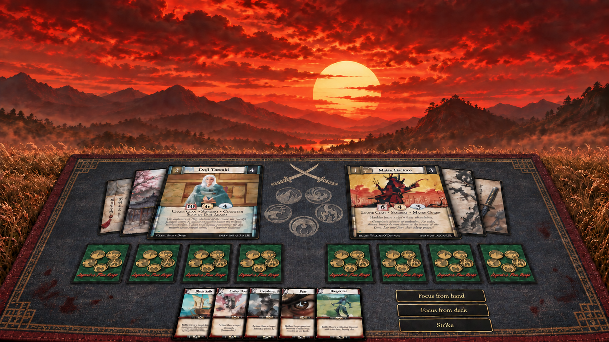
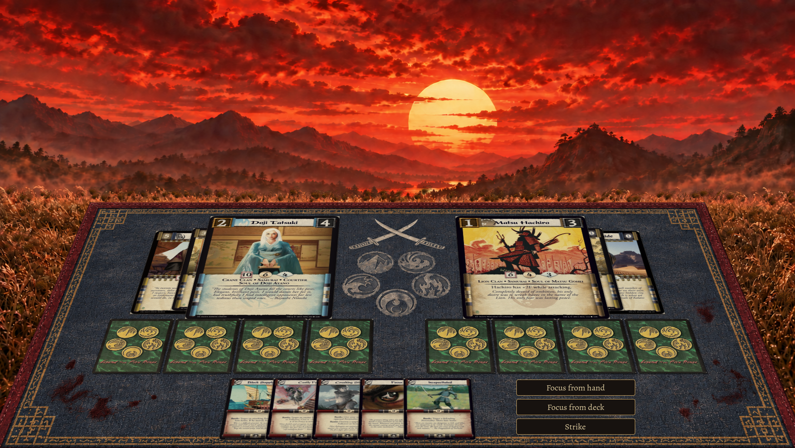
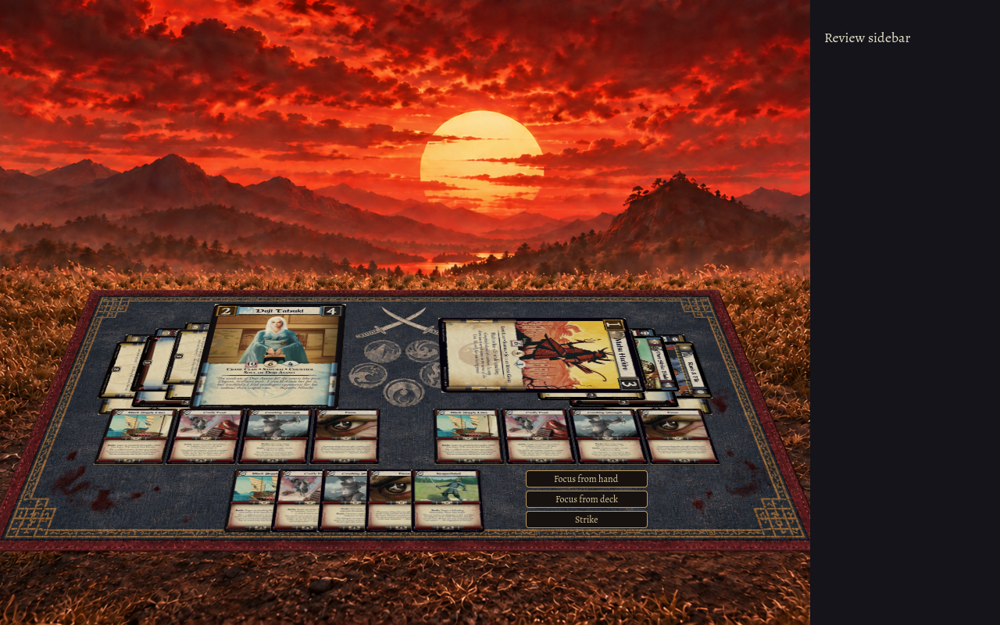
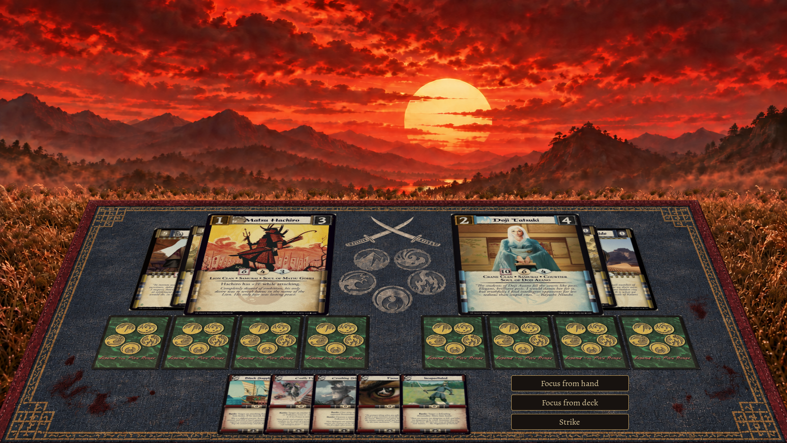
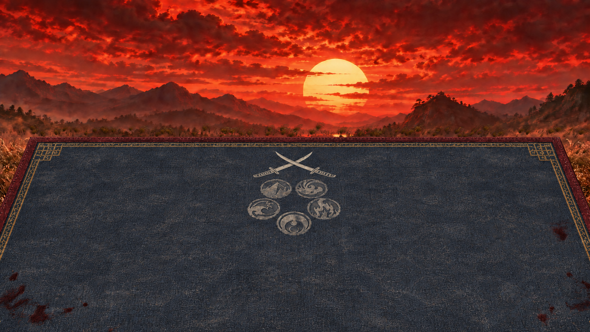
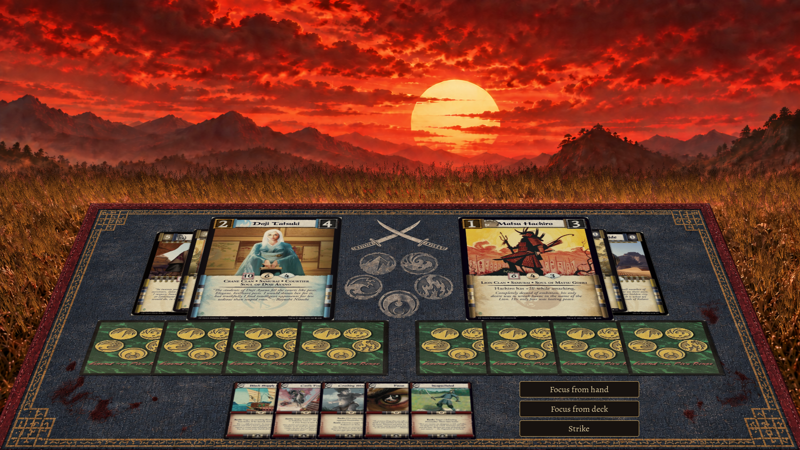
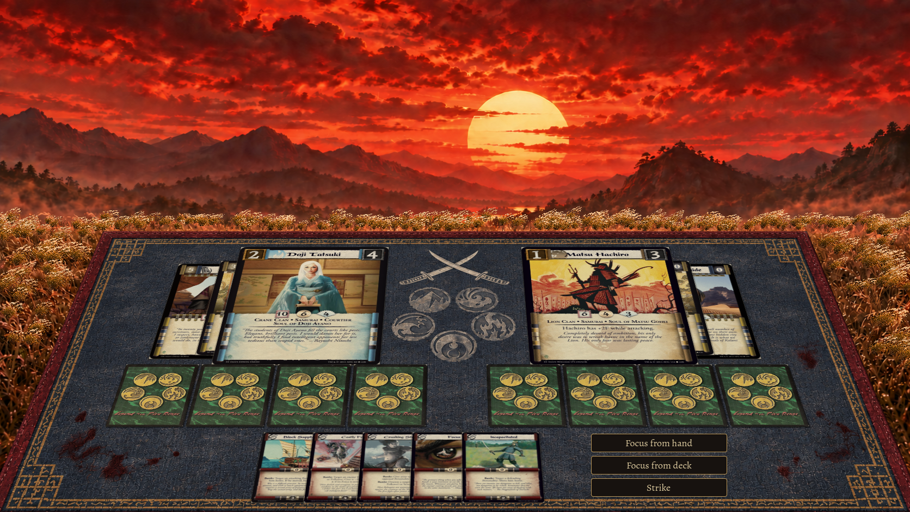

Crimson Standoff · approved concept and native Godot
Editable Blender cloth, original L5R scans, a detailed animated landscape plate, and instanced wind-driven grass. The native image is a public composition fixture; its buttons do not issue match commands.

Approved imagegen target · iteration 5
Native Godot · original card scans and projected inputThe cloud effect is a masked animated matte, with the sun and mountains held fixed; it is not volumetric weather. Grass uses root-anchored broad bending plus smaller independent leaf movement. Reduced motion freezes all ambient effects. Generated microtext from the mockup is replaced by original card resources.
Native stress and close-up views

1280×800 · six attachments, bowed/revealed cards, sidebar

Other seat · original scans and two native input checks

Native cloth and heraldry close-up
1920×1080 composition Preserved iteration checkpoints

First native pass · excessive grass density and incorrect focus-back proportions
Corrected root mapping and focus-card width

Foliage texture pass · highlights and edges needed correction
 Filtered transparency, fewer tufts, restrained grading
Filtered transparency, fewer tufts, restrained grading Native input/camera data · Motion region checks · Performance observation